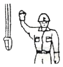

천장크레인운전기능사 (2014-01-26 기출문제)
1과목: 임의 구분
1. 천장크레인의 주행장치에서 감속기의 역할은?
- 차륜의 회전속도를 감속시켜 전동기의 회전력을 향상시킨다.
- 축의 회전속도를 감속시켜 브레이크의 제동력을 향상시킨다.
- 전동기의 회전속도를 감속시켜 차륜에 전달한다.
- 레일의 마찰력을 감소시켜 원활한 주행이 이루어지도록 한다.
(정답률: 58%)

2. 천장크레인 운전실에 대한 설명으로 틀린 것은?
- 운전자가 안전운전을 할 수 있도록 충분한 시야를 확보할 수 있는 구조이어야 한다.
- 운전실의 제어기에는 작동방향표시가 있어야 한다.
- 운전자가 인양물을 잘 볼 수 있도록 운전실에는 조명장치를 설치하지 아니한다.
- 운전자가 쉽게 조작할 수 있는 위치에 개폐기, 제어기, 브레이크, 경보장치를 설치하여야 한다.
(정답률: 97%)
3. 브레이크 중에서 전기를 투입하여 유압으로 작동되는 것은?
- 오일 디스크 브레이크
- 마그넷 브레이크
- 스러스트 브레이크
- 다이나믹 브레이크
(정답률: 65%)
4. 1대의 제어기로 주간 제어기(Master controller) 2대의 기능을 가져, 주행과 횡행 또는 주권과 보권을 같이 사용할 수 있고 설치면적이 절감되는 등의 특징을 가진 제어기는?
- 수동 드럼형 제어기
- 캠 작동식 제어기
- 푸시 버튼 제어기
- 유니버셜 제어기
(정답률: 84%)
5. 크레인 거더의 처짐은 정격하중 및 달기기구 자중을 합한 하중을 가장 불리한 조건으로 권상하였을 때, 스팬의 얼마 이하여야 하는가?
- 1/800
- 1/700
- 1/600
- 1/500
(정답률: 81%)
6. 비상정지스위치에 대한 설명으로 옳은 것은?
- 비상 정지용 누름 버튼은 황색으로 한다.
- 비상정지용 누름 버튼은 머리 부분이 돌출되지 않게 한다.
- 스위치의 복귀로 비상정지 조작 직전의 작동이 자동으로 되어야 한다.
- 운전 조작을 처음의 시동 상태에서 시작하도록 회로를 구성한다.
(정답률: 73%)
7. 전동기의 필요조건과 가장 거리가 먼 것은?
- 기동 회전력이 클 것
- 속도 조종 및 역회전이 가능할 것
- 기동 속도가 빠르고, 용량에 비해 대형일 것
- 기동, 정지 및 역회전 등에 대해 충분히 견딜 수 있는 구조일 것
(정답률: 86%)
8. 크레인의 레일 정지기구(stopper)를 설명한 것으로 틀린 것은?
- 크레인의 횡행레일에는 양끝부분 또는 이에 준하는 장소에 당해 크레인 횡행 차륜 직경의 1/4이상 높이의 정지기구를 설치하여야 한다.
- 주행거리를 연장하거나 또는 필요 시 정지기구(stopper)를 철거하여 편리하게 작업할 수 있어야 한다.
- 크레인의 주행레일에는 양끝부분 또는 이에 준하는 장소에 당해 크레인 주행 차륜 직경의 1/2 이상 높이의 정지기구를 설치하여야 한다.
- 크레인의 주행레일에는 차륜 정지기구에 도달하기 전의 위치에 리미트 스위치 등 전기적 정지장치가 설치되어야 한다.
(정답률: 72%)
9. 고속형 천장크레인의 집전장치로 중간지지를 갖는 수평배열이 며 휠이나 슈를 사용하는 것은?
- 팬터그라프형 집전장치
- 포올형 집전장치
- 고정형 집전장치
- 자유형 집전장치
(정답률: 72%)
10. 훅(hook)에 대한 설명으로 옳은 것은?
- 훅 본체는 균열 또는 변형이 없어야 한다.
- 훅의 재질은 탄소강 단강품이나 기계구조용 탄소강이며, 강도와 연성이 작은 것이 바람직하다.
- 훅은 마모되면서 외이어로프가 걸리는 부분에 홈이 생기며, 이 홈의 깊이가 10㎜가 되면 평편하게 다듬질 하여야 한다.
- 훅 입구의 벌어짐이 신품의 50% 이상 되면 교환하여야 한다.
(정답률: 74%)
11. 천장크레인용 고리걸이 훅의 안전계수는?
- 4 이상
- 5 이상
- 8 이상
- 10 이상
(정답률: 82%)
12. 천장크레인 횡행장치의 동력전달순서로 알맞은 것은?
- 횡행 전동기-감속기어-횡행 차륜
- 횡행 전동기-횡행 차륜-감속기어
- 감속기어-횡행 전동기-횡행 차륜
- 감속기어-횡행 차륜-횡행 전동기
(정답률: 71%)
13. 천장크레인의 시험하중은 정격하중의 몇 % 인가?
- 110
- 120
- 130
- 140
(정답률: 89%)
14. 횡행 스토퍼를 설명한 것 중 틀린 것은?
- 재료는 경질고무나 스프링을 사용한다.
- 횡행차륜 정지용 스토퍼의 높이는 차륜 지름의 1/4이상 되어야 한다.
- 고무 및 유압 등을 이용하여 완충시켜 주는 장치이다.
- 횡행 스토퍼에는 자주 그리스를 도포하여 보호한다.
(정답률: 77%)
15. 전기식 과부하방지장치의 설명으로 틀린 것은?
- 군상모터의 전류변화를 CT로 감지하여 크레인을 정지시키는 장치이다.
- 가격이 다른 종류의 과부하방지장치에 비해 비싸다.
- 정지상태에서는 과부하를 감지하지 못하는 단점이 있다.
- 호이스트, 천장크레인 등 비교적 소형 크레인에 많이 활용된다.
(정답률: 49%)
16. 천장크레인의 주요장치 중 속도제어장치가 부착되지 않는 것은?
- 횡행장치
- 주행장치
- 신호장치
- 주권장치
(정답률: 91%)
17. 주행레일 위에 설치된 새들에 직접적으로 지지 되는 거더가 있는 크레인을 가장 바르게 나타낸 것은?
- 갠트리크레인
- 천장크레인
- 지브형크레인
- 고정식크레인
(정답률: 80%)
18. 크레인에 사용되는 각종 시브(sheave)의 주요 점검사항이 아닌 것은?
- 시브 홈의 이상 마모는 없는가?
- 시브 홈과 와이어로프 지름이 적정한가?
- 시브 홈의 윤활상태는 적정한가?
- 원활히 회전하고 암이나 보스 등에 균열은 없는가?
(정답률: 64%)
19. 천장크레인 브레이크 라이닝의 마모량은?
- 원치수의 10% 이내일 것
- 원치수의 25% 이내일 것
- 원치수의 50% 이내일 것
- 원치수의 80% 이내일 것
(정답률: 75%)
20. 천장크레인에서 와이어로프가 드럼에 감길 때 홈이 없는 경우 플리트(fleet) 각도는 얼마가 좋은가?
- 2° 이내
- 4° 이내
- 15° 이내
- 30° 이내
(정답률: 63%)
2과목: 임의 구분
21. 천장크레인의 주기적인 정비를 위한 예비 품목과 가장 거리가 먼 것은?
- 퓨즈
- 브레이크 라이닝
- 전동기 브러시
- 제어반(판넬)
(정답률: 86%)
22. 가을에서 겨울로 계절이 바뀔 때 옥외용 크레인의 감속기어 오일로 가장 적합한 것은?
- 점도가 낮은 것
- 점도가 높은 것
- 점도가 같은 것
- 옥외는 오일량을 높게 할 것
(정답률: 74%)
23. 전기를 전달하기 어려운 물질은?
- 전도재료
- 절연재료
- 도전재료
- 자성체
(정답률: 88%)
24. 천장크레인의 전원공급은 트롤리선으로 하며 선의 배열 방법에는 수평배열과 수직배열이 있다. 트롤리선의 종류가 아닌 것은?
- 경동 트롤리선
- 애자 트롤리선
- 앵글 동 바 트롤리선
- 레일 트롤리선
(정답률: 66%)
25. 제어기(controller)에 스파크가 심하게 발생하는 고장과 대책 중 틀린 것은?
- 전동기에 과부하가 걸려 있다. - 부하를 적정하게 한다.
- 핑거 및 접촉판이 거칠다. - 사포로 다듬질 한다.
- 저항기가 부적당 하다. - 적정한 것으로 교환 또는 저항치를 수정한다.
- 핑거의 조정이 불량하다. - 접촉압력이 1.5kgf 정도로 되게끔 재조정한다.
(정답률: 75%)
26. 축이음의 종류가 아닌 것은?
- 플렉시블 커플링
- 부시 커플링
- 플랜지 커플링
- 유니버셜 조인트
(정답률: 67%)
27. 천장크레인의 전자석 브레이크 등에 사용하는 것으로 코일을 여러 번 감고 전류를 흐르게 하였을 때 자석이 되게 한것은?
- 라이닝
- 솔레노이드
- 디스크
- 드럼
(정답률: 79%)
28. 천장크레인의 감속기어오일은 약 몇 시간마다 교환하는 것이 좋은가?
- 2000시간
- 200시간
- 20시간
- 매일
(정답률: 90%)
29. 고정자 및 회전자의 양쪽에 권선을 지니고 있으며, 회전자의 권선에 슬립링을 통해서 외부 저항을 증감하면 부하를 걸었을 때 속도를 가감할 수 있고, 특히 크레인의 기동 시에 기계에 충격을 주지 않고 서서히 가속할 수 있는 전동기는?
- 권선형 유도 전동기
- 농형 유도 전동기
- 직류 분권 전동기
- 직류 직권 전동기
(정답률: 63%)
30. 천장크레인 운전자가 작업 시작 전 점검에 대한 설명으로 적합하지 않는 것은?
- 건물과 건물 사이의 거리 상태
- 주행로의 상측 및 트롤리가 횡행하는 레일의 상태
- 와이어로프가 통과할 곳의 상태
- 권과방지장치, 브레이크, 클러치 및 운전장치의 기능
(정답률: 75%)
31. 크레인 운전 후 전동기 부분의 발열이 심한 것을 발견하였다. 발열의 원인으로서 가장 거리가 먼 것은?
- 사용빈도가 높았다.
- 부하가 과대하였다.
- 저항기가 부 적정하였다.
- 단선이 되었다.
(정답률: 82%)
32. 천장크레인 부품에서 수리한도에 대한 설명으로 맞는 것은?
- 차기의 검사까지 보증할 여유를 두고 정해진 한도이다.
- 재료역학 관점에서 최후의 한도이다.
- 마모한도라고도 한다.
- 사용한도보다 큰 한도로 되어 있다.
(정답률: 73%)
33. 전동기에서 2차 저항기의 역할로 가장 알맞은 것은?
- 전동기에 과전류가 흐르는 것을 막아 전동기를 보호하는 역할을 한다.
- 전동기의 저항을 줄임으로서 전동기의 회전수를 일정하게 하는 역할을 한다.
- 권선형 유도전동기의 2차 회로에 부착되어 저형량을 조정함으로써 속도를 변속하는 역할을 한다.
- 농형 전동기에 저항이 너무 크므로 2차 저항기를 부착하여 저항량을 줄임으로서 안전하게 작동할 수 있는 역할을 한다.
(정답률: 68%)
34. “권상에 있어서 새로운 로프를 교환 후 ( )을 걸지 말고 ( )정도로 수회 고르기 운전을 행한 후 사용한다.“ ( )에 적당한 것은?
- 하중, 1/2속도
- 전하중, 1/2하중
- 하중, 규정속도
- 전하중, 규정속도
(정답률: 73%)
35. 구름베어링에 대한 설명으로 틀린 것은?
- 미끄럼 베어링에 비하여 마찰손실이 적다.
- 미끄럼 베어링보다 소음이나 진동이 생기기 쉽다.
- 미끄럼 베어링보다 충격에 강하다.
- 미끄럼 베어링에 비해 윤활과 보수가 용이하다.
(정답률: 66%)
36. 크레인의 운전종료 후 조치사항으로서 틀린 것은?
- 각 제어기를 OFF하고 전원스위치(S/W)를 OFF한다.
- 각 부의 기기를 청소한다.
- 크레인 작업종료 지점에 정지하고 메인 스위치(S/W)를 OFF한다.
- 운전 중 이상을 느꼈던 부분을 점검한다.
(정답률: 75%)
37. 천장크레인 운전 시작 전 고려하여야 할 사항으로 틀린 것은?
- 작업내용과 작업순서에 대하여 관계자와 충분히 협의한다.
- 크레인 이동하는 영역 내에 장애물이 없는지를 사전에 확인한다.
- 방호장치의 이상 유무를 확인한다.
- 이동할 물품 종류 등에 대해서 고려 할 필요가 없으며, 신속한 작업의 고려가 우선이다.
(정답률: 95%)
38. 천장크레인 점검 보수작업 중 감전사고가 발생하였을 때 조치 방법으로 틀린 것은?
- 즉시 전원을 차단한다.
- 즉시 피해자를 잡아 당겨 접촉물로부터 분리시킨다.
- 감전되어 인사불성에 빠지더라도 전원 차단 후 인공호흡을 실시한다.
- 전원을 차단하기 어려운 경우에는 마른 헝겊이나 플라스틱 등 절연물을 이용하여 접촉물을 제거한다.
(정답률: 80%)
39. 크레인에서 주행차륜 베어링의 점검항목이 아닌 것은?
- 현저한 마모가 없을 것
- 이상 진동 또는 현저한 발열이 없을 것
- 급유가 적정할 것
- 용접부 크랙이 없을 것
(정답률: 64%)
40. 기어의 손상 중 잇면으로부터 일부 금속편이 떨어지는 원인으로 가장 적당한 것은?
- 과하중 또는 중심선의 불일치
- 윤활유의 부적당
- 윤활유량 과다
- 기어의 회전속도가 느릴 때
(정답률: 75%)
3과목: 임의 구분
41. 크레인에서 와이어로프를 교환 후 작업 개시 전 권상시험을 해 볼 때 가장 양호한 방법은?
- 정격하중의 1/2를 매달아 여러 번 권상∙하 해본다.
- 정격하중을 매달아 여러 번 권상∙하 해본다.
- 시험하중을 매달아 여러 번 권상∙하 해본다.
- 적당량의 부하하중을 운전자가 선정하여 여러 번 권상∙하해본다.
(정답률: 74%)
42. 천장크레인에서 사용하는 일반 와이어로프 소선의 표준인장 강도는?
- 135~180kg∙/mm2
- 85~150kg∙/mm2
- 40~50kg∙/mm2
- 10~20kg∙/mm2
(정답률: 71%)
43. 크레인에 사용하는 권상용 와이어로프의 안전율은 얼마 이상인가?
- 3
- 5
- 7
- 10
(정답률: 80%)
44. 크레인이 작동 중에 위험한 상황이 발생되어 신호수가 아닌 낯모르는 사람이 정지신호를 보내왔다. 이때 운전자는 어떻게 행동해야 하는가?
- 무조건 정지시키고 난 후 확인한다.
- 신호수가 아니므로 무시하고 작업을 진행한다.
- 신호수에게 물어보거나 가까이에 신호수가 없으면 사이렌을 울린다.
- 운전자가 주위를 확인한 후 정지한다.
(정답률: 68%)
45. 와이어로프를 드럼(drum)에 설치할 때, 와이어로프가 벗겨지지 않도록 무엇을 사용하여 볼트로 조이는가?
- 너트
- 클램프(고정구)
- 섀클
- 링크
(정답률: 77%)
46. 와이어로프에 관한 설명 중 틀린 것은?
- 랭 꼬임은 소선의 경사가 완만하여 외부와의 접촉면이 길다.
- 보통 꼬임은 스트랜드와 와이어로프의 꼬임 방향이 서로 반대이다.
- 보통 꼬임은 외부와 접촉 면적이 작아서 마모는 크지만 킹크 발생이 적고 취급이 용이하다.
- 랭 꼬임은 보통 꼬임에 비해서 손상도가 심해 장시간의 사용에 불리하다.
(정답률: 48%)
47. 직경이 500㎜이고, 길이가 1m인 환봉을 크레인으로 운반하고자 할 때, 이 환봉의 무게는? (단, 환봉의 비중은 8.7)
- 1.70kg
- 17.0kg
- 170.8kg
- 1708kg
(정답률: 36%)
48. 크레인에서 와이어로프를 고정할 때, 가장 효율이 높고 양호한 고정방법은?
- 합금고정
- 클립고정
- 쐐기고정
- 엮어넣기
(정답률: 61%)
49. 크레인 신호 중 그림과 같이 한 손을 들어 올려 주먹을 쥐는 수신호는?

- 정지
- 비상 정지
- 작업 완료
- 위로 올리기
(정답률: 89%)
50. 신호법 중 운전자가 사이렌을 울리거나 한쪽 손 주먹을 다른 손의 손바닥으로 2, 3회 두드리는 신호는?
- 기중기의 이상 발생
- 기다려라
- 물건 걸기
- 신호 불명
(정답률: 66%)
51. 안전보건표지의 종류와 형태에서 그림의 표지로 맞는 것은?
- 안전복 착용
- 안전모 착용
- 보안면 착용
- 출입금지
(정답률: 96%)
52. 드라이버 사용 시 주의할 점으로 틀린 것은?
- 규격에 맞는 드라이버를 사용한다.
- 드라이버는 지렛대 대신으로 사용하지 않는다.
- 클립(clip)이 있는 드라이버는 옷에 걸고 다녀도 무방하다.
- 잘 풀리지 않는 나사는 플라이어를 이용하여 강제로 뺀다.
(정답률: 73%)
53. 전장품을 안전하게 보호하는 퓨즈의 사용법으로 틀린 것은?
- 퓨즈가 없으면 임시로 철사를 감아서 사용한다.
- 회로에 맞는 전류 용량의 퓨즈를 사용한다.
- 오래되어 산화된 퓨즈는 미리 교환한다.
- 과열되어 끊어진 퓨즈는 과열된 원인을 먼저 수리한다.
(정답률: 92%)
54. 산업재해 부상의 종류별 구분에서 경상해란?
- 부상으로 1일 이상 14일 이하의 노동 상실을 가져온 상해 정도
- 응급 처치 이하의 상처로 작업에 종사하면서 치료를 받는 상해 정도
- 부상으로 인하여 2주 이상의 노동 상실을 가져온 상해 정도
- 업무상 목숨을 잃게 되는 경우
(정답률: 63%)
55. 벨트를 풀리에 걸 때는 어떤 상태에서 걸어야 하는가?
- 저속으로 회전 상태
- 중속으로 회전 상태
- 고속으로 회전 상태
- 회전을 중지한 상태
(정답률: 94%)
56. 다음 중 전기 화재에 대하여 가장 적합하지 않은 것은?
- 분말 소화기
- 포말 소화기
- CO2 소화기
- 할론 소화기
(정답률: 62%)
57. 무거운 짐을 이동할 때 설명으로 틀린 것은?
- 힘겨우면 기계를 이용한다.
- 기름이 묻은 장갑을 끼고 한다.
- 지렛대를 이용한다.
- 2인 이상이 작업할 때는 힘센 사람과 약한 사람과의 균형을 잡는다.
(정답률: 100%)
58. 지렛대 사용 시 주의사항이 아닌 것은?
- 손잡이가 미끄럽지 않을 것
- 화물 중량과 크기에 적합할 것
- 화물 접촉면을 미끄럽게 할 것
- 둥글고 미끄러지기 쉬운 지렛대는 사용하지 말 것
(정답률: 96%)
59. 크레인 운전 시 운전자 안전수칙을 설명한 것으로 틀린 것은?
- 운반물을 작업자 머리 위로 운반해서는 안 된다.
- 운전석을 이석할 때는 크레인을 정지위치로 이동시킨 후 훅을 최대한 내려놓는다.
- 옥외크레인은 강풍이 불어올 경우 운전 및 옥외 점검, 정비를 제한한다.
- 운반물이 흔들리거나 회전하는 상태로 운반해서는 안 된다.
(정답률: 88%)
60. 마이크로미터를 보관하는 방법으로 틀린 것은?
- 습기가 없는 곳에 보관한다.
- 직사광선에 노출되지 않도록 한다.
- 앤빌과 시픈들을 밀착시켜서 둔다.
- 측정부분이 손상되지 않도록 보관함에 보관한다.
(정답률: 93%)